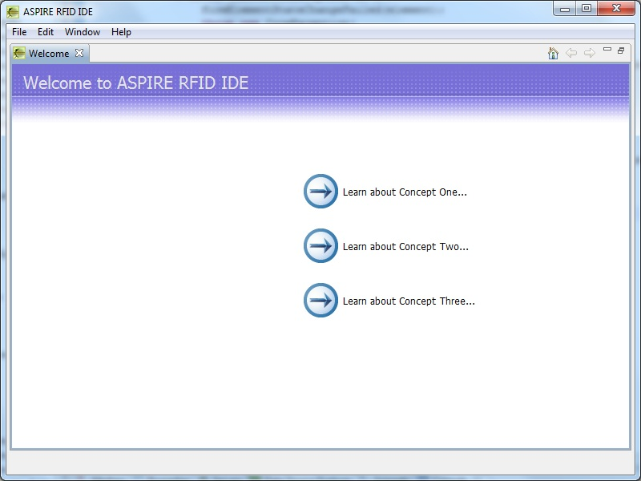
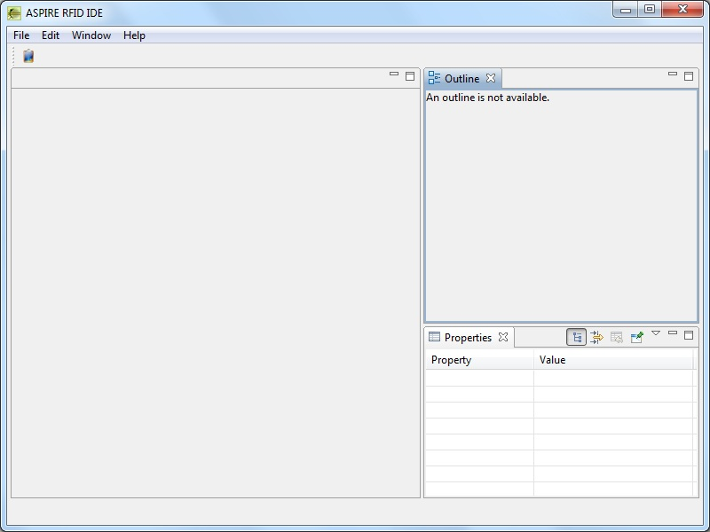
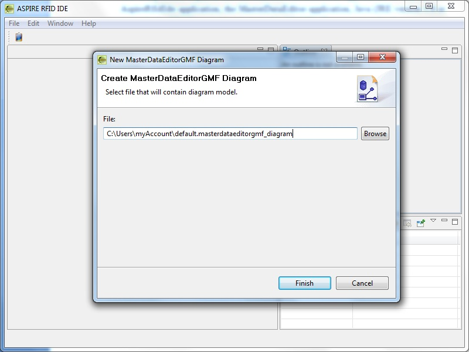
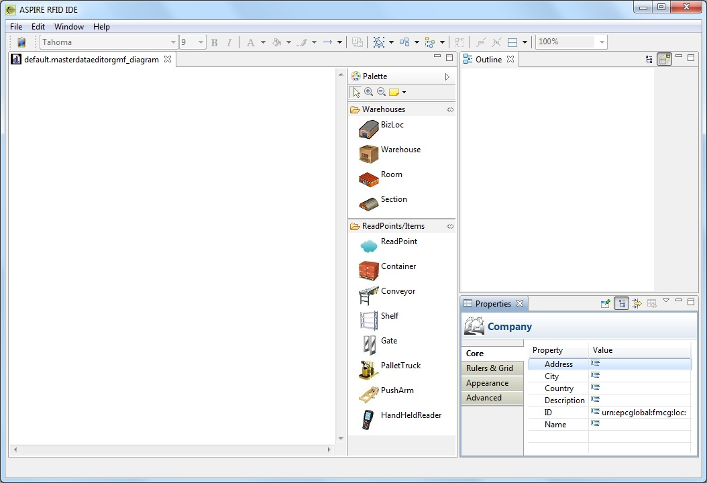
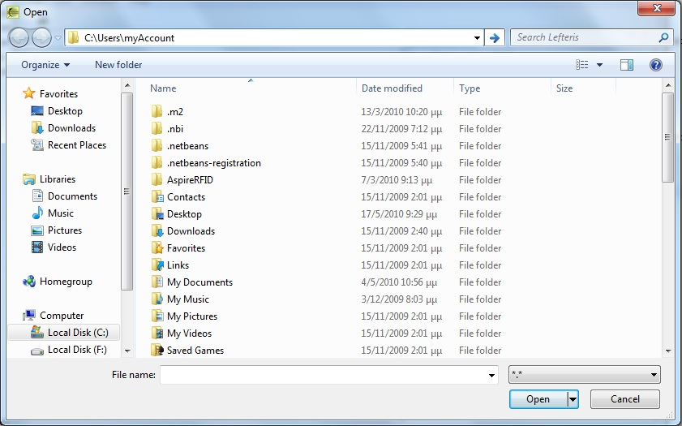
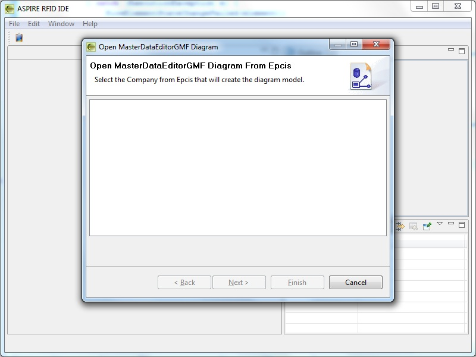
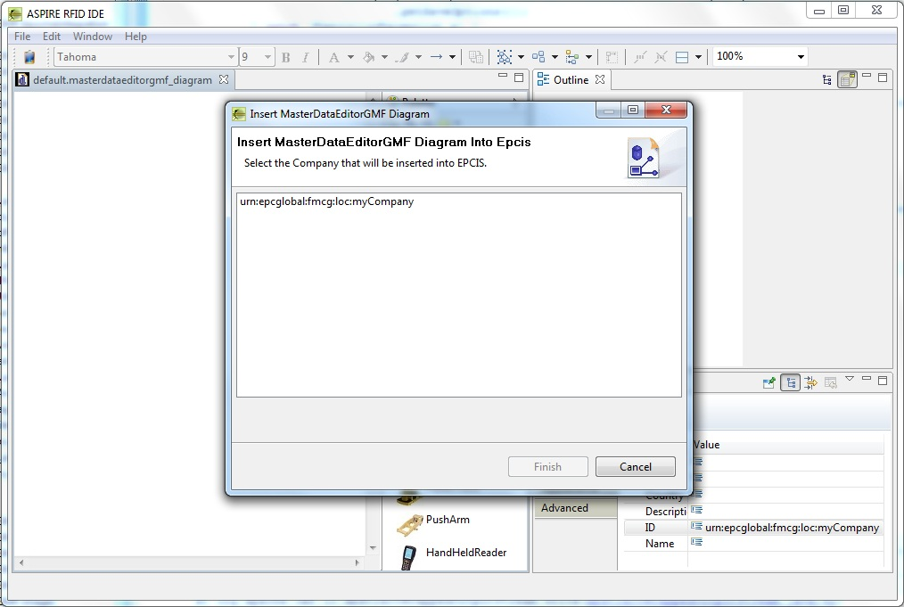

RFID Business Location GMF Editor
Introduction
The RFID Business Location GMF Editor which is also called the MasterDataEditorGMF project, aims at developing a graphical representation of the MasterData of an RFID EPCIS repository. The main goal was to ease the management of the Business Locations and Read Points, which contain RFID tags, of an enterprise. In more general terms the main goal was to ease the warehouse management of an enterprise, by representing the MasterData graphically. It is an enhancement of the MasterDataEditor project and provides a more user friendly environment for managing the MasterData.
The main goals are:
- Provide a UML-like graphical representation of the Business Locations (warehouses), Read Points of a company.
- Query the EPCIS repository and create new diagrams from the MasterData that are stored in it.
- Capture the MasterData of a diagram and insert them into the EPCIS repository.
- Create new diagrams from Apdl files.
- Create offline diagrams which are saved locally in a file.
- Communicate with the BPWME project and store into the Apdl file the MasterData of the diagram.
- Communicate with the BPWME project and create a diagram from an Apdl file.
- Communicate with the BPWME project and correlate a diagram with a CLCB element.
Developer Guide
In order to successfully build the MasterDataEditorGMF project within Eclipse, the circular dependencies of the plug-ins must be disabled from the preferences menu:
- Preferences -> Java -> Compiler -> Building -> Build path problems -> Circular dependencies : Warning
User Guide
Requirements
Software
- Java 1.6 or higher
- Tomcat 6.0 (or higher) or another server for web-services. (This guide assumes that you use an Apache Tomcat server.)
- MySQL 5.0 (or higher)
Starting the MasterDataEditorGMF application
Prior to starting the MasterDataEditorGMF application, the user has to first start the AspireRfidIde application.

MasterDataEditorGMF view
When starting the AspireRfidIde application there is an option to view MasterDataEditorGMF editor by selecting Window -> Show View -> Master Data Editor GMF.

This view consists of 3 active windows.
- Editor
- Outline
- Properties
Editor window
The editor window is the main window where a MasterDataEditorGMF diagram is being constructed. All the elements can be either created by clicking them on the editor or by manually resizing them. The application automatically validates where an element can be placed. The elements that are already created inside a compartment can not be moved into another compartment.
Palette window
The palette window resides in the editor window and contains all the elements that are used to create a MasterDataEditorGMF diagram. It has also additional options such as zoom in, zoom out and the creation of a note.
Properties window
The properties window contains individual properties depending on the element currently selected. These properties are:
- Core properties of an element that provide its attributes.
- Rulers & Grid properties that provide options for the editor.
- Appearance properties that provide appearance options.
Outline window
The outline window shows the whole diagram in the editor window in a zoomed out perspective.
Preferences
The MasterDataEditorGMF application provides preferences by selecting Window -> Preferences -> MasterDataEditorGMF Diagram. The standard preferences of a GMF application are the Appearance, Connections, Pathmaps, Printing, Rulers And Grid.
Configurator Preference
In the Configurator Preference the user can enter the EPCIS Repository Capture URL and the EPCIS Repository Query URL.
Additionally, there is an option to set the size of the elements when permorming the action "MasterDataEditorGMF Square Layout".
Moreover, there are options to insert new custom attributes that will be displayed in the Core property window of each element. The maximum number of the custom attributes is 20 for each element.
MasterDataEditorGMF Actions
New MasterDataEditorGMF Diagram
To create a new MasterDataEditorGMF diagram the user should select File -> MasterDataEditorGMF -> New MasterDataEditorGMF Diagram. The user is prompted to correlate the MasterDataEditorGMF file with a CLCB (from a BPWME file). By pressing yes a new window for selecting the respective CLCB will open. By selecting a CLCB and pressing finish the MasterDataEditorGMF diagram file will be created under a new folder of the CLCB that was correlated. The MasterDataEditorGMF file has the extension .masterdataeditorgmf_diagram. This file contains all the necessary info of the diagram and can be used for offline options (when there is no connection with the EPCIS repository).
In case the user doesn't want to correlate the MasterDataEditorGMF diagram with a CLCB, then he has to select the location and file name of the MasterDataEditorGMF file that will be created.


Open MasterDataEditorGMF Diagram From File
The user can open a MasterDataEditorGMF diagram from a file with the extension .masterdataeditorgmf_diagram by selecting File -> MasterDataEditorGMF -> Open MasterDataEditorGMF Diagram From File. In these cases either there is no connection with the EPCIS repository or a diagram was created and saved locally.

Open MasterDataEditorGMF Diagram From Apdl
The user can open multiple MasterDataEditorGMF diagrams from an Apdl file with the extension .xml by selecting File -> MasterDataEditorGMF -> Open MasterDataEditorGMF Diagram From Apdl. All the MasterData that reside in the Apdl file will be created separately in MasterDataEditorGMF diagrams.
Open MasterDataEditorGMF Diagram From EPCIS
A MasterDataEditorGMF diagram can be constructed from the MasterData which is stored in the EPCIS repository. When selecting File -> MasterDataEditorGMF -> Open MasterDataEditorGMF Diagram From EPCIS, the user is prompted to correlate the MasterDataEditorGMF file with a CLCB (from a BPWME file). By pressing yes a new window for selecting the respective CLCB will open. By selecting a CLCB and pressing finish, a list of the companies that are stored in the EPCIS repository is displayed. By selecting a company and proceeding to the next window, a file is also required for the diagram to be constructed. If no connection to the EPCIS repository exists then an error will pop up.
In case the user doesn't want to correlate the MasterDataEditorGMF diagram with a CLCB, then he has to select the location and file name of the MasterDataEditorGMF file that will be created from the EPCIS.

Insert MasterDataEditorGMF Diagram Into EPCIS
A MasterDataEditorGMF diagram can be inserted into the EPCIS repository by selecting File -> Insert MasterDataEditorGMF Diagram Into EPCIS. The company of the current active window of the diagram will be displayed and inserted into the EPCIS repository.

Correlate MasterDataEditorGMF Diagram With CLCB
The user can correlate an existing MasterDataEditorGMF diagram with a CLCB, if there are open BPWME diagrams. When selecting File -> MasterDataEditorGMF -> Correlate MasterDataEditorGMF Diagram With CLCB, the user is prompted to correlate the MasterDataEditorGMF file with a CLCB (from a BPWME file). By pressing yes a new window for selecting the respective CLCB will open. By selecting a CLCB and pressing finish, a copy of the MasterDataEditorGMF diagram file will be created under a new folder of the CLCB that was correlated.
MasterDataEditorGMF Square Layout
The user can lay out in square a MasterDataEditorGMF diagram by selecting File -> MasterDataEditorGMF -> MasterDataEditorGMF Square Layout. All the elements will be arranged in a square regardless the size of each element. This can be very convenient for diagrams with big number of elements.
Elements – Properties
Company Element
The main element of a MasterDataEditorGMF diagram is the Company. It always exists as it cannot be created from the palette and can be considered as the “background” of the diagram.
Company Element Attributes
The default attributes of a Company element are the ID, Name, Address, City, Country, Description. The ID has the default value urn:epcglobal:fmcg:loc: and is a mandatory field, in case the user wants to save the Company into the EPCIS repository.
Warehouse Elements
The Warehouse category (in the palette window) provides 4 Warehouse elements: BizLoc, Warehouse, Room, Section. The “BizLoc” Warehouse is an abstract Warehouse element where the user can choose its type, whereas the others have default type which cannot be changed. On top of a warehouse element its Name attribute is displayed.
Warehouses Attributes
The default attributes of a Warehouse element are the ID, Name, Description, Type. The ID has the default value urn:epcglobal:fmcg:loc: and is a mandatory field, in case the user wants to save the Warehouse into the EPCIS repository.
Read Point Elements
The ReadPoint/Items category (in the palette window) provides 8 ReadPoint elements: ReadPoint, Container, Conveyor, Shelf, Gate, PalletTruck, PushArm, HandHeldReader. The “ReadPoint” Read Point element is an abstract ReadPoint element where the user can choose its type, whereas the others have default type which cannot be changed.
Read Point Attributes
The default attributes of a ReadPoint element are the ID, Name, Description, Type ReadPoint. The ID has the default value urn:epcglobal:fmcg:loc: and is a mandatory field, in case the user wants to save the ReadPoint into the EPCIS repository. The ReadPoint attribute can have the value true or false. If it is true then the element is considered as a ReadPoint element, else if it is false the element is considered as a Warehouse element.
Elements’ Compartments
Compartment of an element is the part of the element where children elements can be placed. None of the elements that are placed inside a compartment can be moved into another compartment.
Company compartment
The Company element consists of one compartment where only Warehouse elements can be placed. These can be the BizLoc, Warehouse, Room, Section elements. Inside the Company compartment the children elements can be resized.
Warehouse compartment
The Warehouse elements consist of 2 compartments. The top compartment where Warehouse children elements can be placed and the bottom compartment where ReadPoint children elements can be placed. The ReadPoint elements cannot be resized in the Warehouse compartment whereas the Warehouse children elements can.
ReadPoint compartment
The ReadPoint elements do not have compartments and as such they do not have children elements.
 PDF
PDF History
History


{kind=link}
{kind=link}
{kind=link}
{kind=link}
{kind=link}
{kind=link}
{kind=link}
{kind=link}